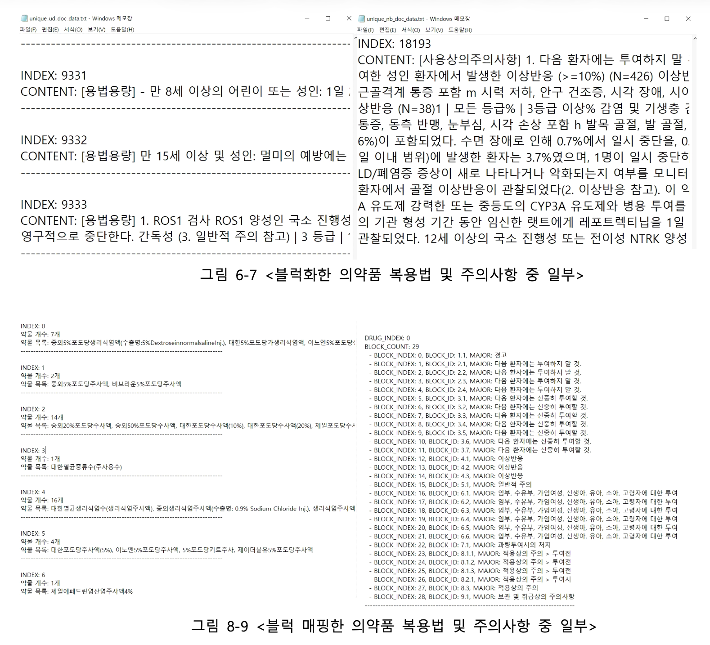

01 배경
모든 약품의 설명을 쉬운 말로 제공해야 했지만, 약 4만 4천 건(약 1GB)을 그대로 변환하면 API 비용이 약 $200으로 예상됐습니다. 약품 수를 줄이지 않고 예산 안에서 처리해야 했습니다.
변환 비용이 예산을 넘으면 설명을 제공할 의약품을 줄여야 해 서비스 범위가 좁아집니다. 건당 변환 비용을 낮추면 같은 예산으로 모든 의약품을 다룰 수 있습니다.
02 문제 분석과 구현 과정
완전 일치 문장 중복 제거
문제 상황 모든 약품의 설명을 제공하려면 약 4만 4천 건, 1GB 규모의 원문을 변환해야 했고, 그대로 하면 API 비용이 약 $200으로 예상됐습니다.
시도와 결과 약품 원문 100개를 직접 살펴 약 70%가 중복되는 내용임을 확인했고, 이 분석과 작업 계획으로 전처리 기간 7일을 확보했습니다. 원문을 문장 블록으로 나눠 완전히 같은 문장은 하나로 합치고, 각 약품과 문장 블록의 연결은 남겼습니다.
판단 약품 수를 줄이는 대신 같은 문장을 한 번만 변환해 재사용하기로 했습니다.
GPT Batch API 일괄 변환과 약품별 재연결
문제 상황 중복을 걷어낸 뒤에도 남은 변환 비용을 더 낮춰야 했습니다.
시도와 결과 사용 중에 바로 응답해야 하는 작업이 아니라 일괄 처리의 대기 시간을 받아들이고, 고유 문장을 GPT Batch API로 변환했습니다. 남겨 둔 약품 ID와 문장 블록 ID의 연결로 각 약품에 결과를 다시 붙여, 예상했던 약 $200 대비 실제 API 지출 $11.18로 변환을 마쳤습니다.
판단 중복 제거와 Batch 변환으로 약품 범위를 줄이지 않고 기능을 만들었습니다.
2026 PySpark 재현 - 어미 통일과 유사 문장 통합의 효과 측정
문제 상황 2025년 정제 코드 일부와 원본 파일이 남아 있지 않아, 완전 일치 이후 단계의 효과를 숫자로 설명할 수 없었습니다.
시도와 결과 식약처 공개 API로 42,714개 품목을 다시 수집해 324만여 개 블록을 여러 코어로 나눠 처리하고 데이터가 커져도 클러스터로 확장할 수 있도록 PySpark로 정규화와 완전 일치 중복 제거를 재현했습니다. 이어 어미 통일 사전과 MinHashLSH(글자 3-gram)를 적용하고, 임계값 0.1·0.2·0.3에서 줄어든 양과 합쳐진 표본을 비교했습니다.
판단 0.3이면 18.78%가 줄었지만 다른 질환(Lapp·Total 유당분해효소 결핍증)의 문장이 합쳐졌고, 0.2에서도 주의 문장 일부가 사라졌습니다. 잘못 합치면 틀린 주의사항을 전하게 되므로, 숫자와 조건이 같을 때만 합치는 안전장치와 함께 0.1(추가 6.69% 감소)을 골랐습니다.
03 개선한 처리 흐름

flowchart TD A[약품 원문 · 약 1GB] --> B[문장 블록 분리] B --> M[약품 ID와 문장 블록 ID 연결 보존] B --> C[완전히 일치하는 문장 통합] C --> G[고유 문장을 GPT Batch API로 변환] G --> R[각 약품에 변환 결과 재연결] M --> R C -.-> S[2026 PySpark 재현 · 어미 통일과 MinHashLSH 효과 측정]
같은 문장은 한 번만 변환하고 약품별 연결을 보존해 결과를 다시 붙였습니다. 2026년에는 같은 과정을 PySpark로 재현해 측정했습니다.
Mermaid 원문 보기
flowchart TD A[약품 원문 · 약 1GB] --> B[문장 블록 분리] B --> M[약품 ID와 문장 블록 ID 연결 보존] B --> C[완전히 일치하는 문장 통합] C --> G[고유 문장을 GPT Batch API로 변환] G --> R[각 약품에 변환 결과 재연결] M --> R C -.-> S[2026 PySpark 재현 · 어미 통일과 MinHashLSH 효과 측정]
04 결과와 배운 점
실제 API 지출 $11.18 · PySpark 재현에서 텍스트 94.1% 감소
전체 원문을 처리할 때 예상한 약 $200 대비 실제 API 지출 $11.18로 변환을 마쳤습니다. 설명할 약품의 범위는 줄이지 않고, 고유 문장의 변환 결과를 재사용해 예산 안에서 기능을 만들었습니다. 2025년 정제 코드 일부가 남아 있지 않아, 2026년에 식약처 공개 API로 42,714개 품목(순수 텍스트 960MB)을 다시 수집해 같은 정제 과정을 PySpark로 재현했습니다. 완전 일치 중복 제거로 텍스트를 744MB에서 44.1MB로 94.1% 줄였고, 어미 통일 사전으로 0.78%, MinHashLSH 유사 문장 통합으로 6.69%를 더 줄였습니다.
약 $200은 사전 추산이고 $11.18은 실제 지출입니다. 전처리 7일의 인건비는 포함하지 않았습니다. 2026년 수치는 다시 수집한 데이터로 측정해 2025년 처리 데이터와 같지 않습니다. 재현 코드는 AI 코딩 도구로 작성했고, 실험 설계와 임계값 판단을 맡았습니다.